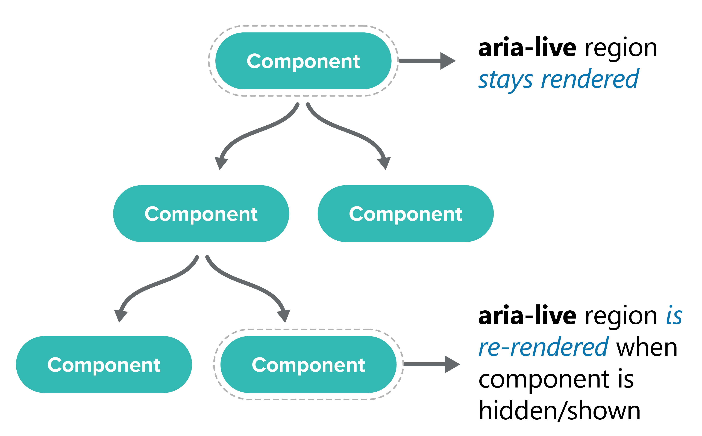
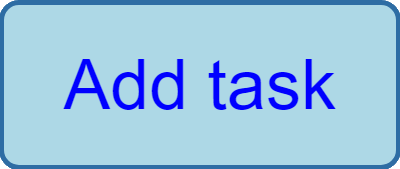
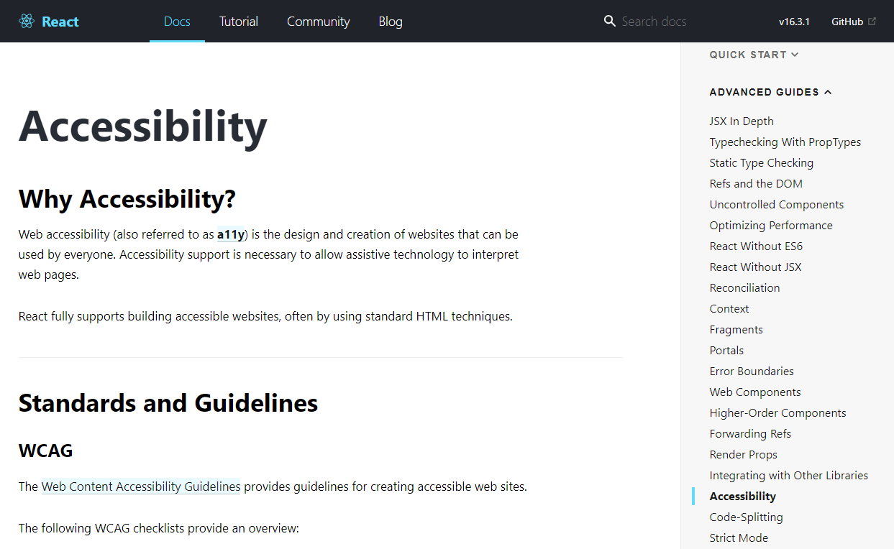
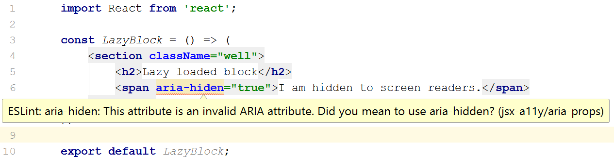
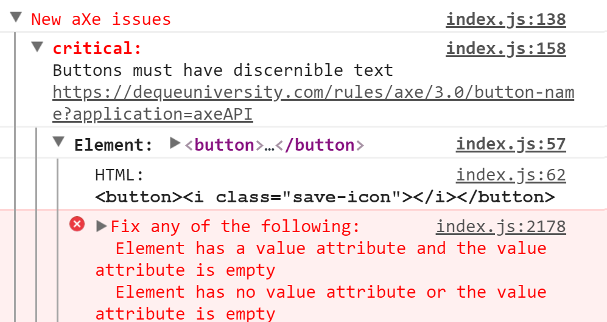

a11y and modern JavaScript
... but isn't JS bad?
Nope
Using JS is fine
It's 2018...
blind people use smartphones too
recap: a11y
visual motoric cognitive situational temporal
So, can we just assume the framework takes care?
sorry, Gudetama, lazy won't work...new and unexpected dangers
some familiar tools are useless
how NOT to a11y
a.k.a. the Gutenberg gaffe
“It currently requires 34 separate keyboard stops, and even more if the tester doesn’t have prior knowledge of how to navigate Gutenberg.”
let's fight the good fight!
how to implement in React?
semantic jsx creates semantic html
JSX and ARIA
All ARIA attributes are valid JSX props!
<input id={nameId} aria-label={accessibleLabel} type="text" />
Semantic JSX and HTML
Non-semantic
Semantic JSX and HTML
Semantic
<MainContent /> <button type="button" onClick={handler}> Save selection </button>
Messaging
Normally we'd use ARIA live
<div aria-live="polite"
aria-atomic="true"
aria-relevant="additions">
**Notification messages goes here**
</div>
However, React makes this difficult
remember:
routing does NOT get announced
What you need is...
FOCUS
FOCUS
FOCUS
Inaccessible
Accessible
:focus {
outline: 0; //Or none
}
:focus {
// Some visual style
}
Name:
<label htmlFor="nameInput">
Name:
</label>
<input id="nameInput"
type="text" />
Inaccessible
Accessible
<div className="button-style"
onClick={onClickHandler}>
Press Me
</div>
<button onClick={onClickHandler}>
Press Me
</button>
<a onClick={onClickHandler}>
Click me
</a>
Navigate somewhere

helper tools
you need both:
a linter for your jsx
and something to check the generated DOM
The React Accessibility Doc
 reactjs.org/docs/accessibility.htmleslint-plugin-jsx-a11y
eslint-plugin-jsx-a11y
More than 30 ESLINT a11y checks
Rules are configurable
IDE support
a11y issues become build warnings
github.com/evcohen/eslint-plugin-jsx-a11yreact-axe
 github.com/dequelabs/react-axeTest with your keyboard
Use TAB, SHIFT + TAB, ENTER and the arrow keys.

React Aria Live announcer
https://github.com/AlmeroSteyn/react-aria-liveComponents
grommet.io
beautiful
good a11y
WhatSock bootstrap-react
just released as beta
strict a11y
https://github.com/whatsock/bootstrap-react